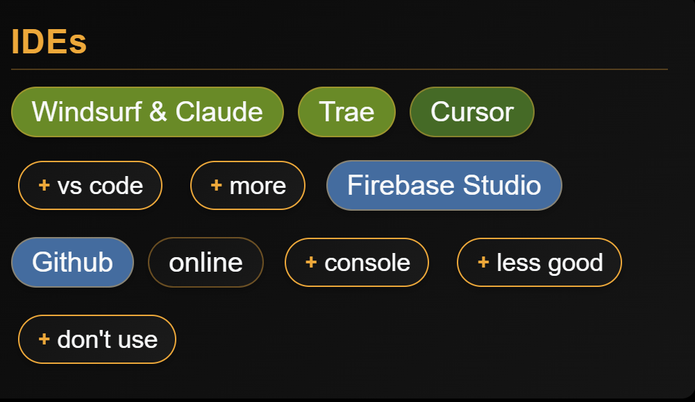

In der heutigen schnelllebigen Technologielandschaft ist die Integration von Künstlicher Intelligenz in den Entwicklungsprozess nicht nur ein Luxus — sie wird zur Notwendigkeit. Nach Jahren traditioneller Entwicklungspraktiken habe ich festgestellt, dass ein „AI-first“-Ansatz die Produktivität dramatisch steigern kann, während die Codequalität erhalten bleibt.
Was ist AI-first-Entwicklung?
AI-first-Entwicklung ist eine Methodik, bei der KI-Werkzeuge und -Techniken von Anfang an in den gesamten Entwicklungslebenszyklus integriert werden. Anstatt KI als Nachgedanke oder Zusatzfunktion zu behandeln, wird sie zu einem Kernbestandteil davon, wie wir Anwendungen konzipieren, entwerfen, programmieren, testen und bereitstellen.
Dieser Ansatz umfasst mehrere Kernbereiche:
- Code-Generierung: KI zum Schreiben von Boilerplate-Code, Generieren von Funktionen und Erstellen ganzer Module nutzen
- Qualitätssicherung: Automatisierte Tests, Code-Reviews und Fehlererkennung powered by KI
- Architekturplanung: KI-gestütztes Systemdesign und Datenbankmodellierung
- Dokumentation: Automatische Erstellung technischer Dokumentation und Kommentaren
Praktische Umsetzungsstrategien
AI-first-Entwicklung bedeutet nicht, menschliche Kreativität und Problemlösung zu ersetzen. Es geht vielmehr darum, unsere Fähigkeiten zu erweitern und unsere Energie auf wertschöpfende Aufgaben zu konzentrieren.
1. Mit Code-Generierung beginnen
Beginnen Sie mit KI-Werkzeugen wie GitHub Copilot, ChatGPT oder Claude zur Generierung repetitiver Code-Strukturen. Ich habe dies als besonders effektiv gefunden für:
- Datenbankschema-Erstellung und Migrations-Skripte
- API-Endpoint-Boilerplate in PHP
- JavaScript-Event-Handler und DOM-Manipulation
- CSS-Responsive-Design-Patterns
„Der Schlüssel ist nicht, KI alles schreiben zu lassen, sondern sie als smarte Autovervollständigung zu nutzen, die Kontext und Best Practices versteht.“
2. Automatisierte Tests und Qualitätssicherung
KI excelloiert in der Mustererkennung, was sie perfekt zur Identifizierung von Fehlern und Sicherheitslücken macht. Integrieren Sie KI-gestützte Werkzeuge in Ihre CI/CD-Pipeline, um:
- Umfassende Testfälle zu generieren
- Statische Code-Analyse durchzuführen
- Sicherheitslücken zu erkennen
- Datenbankabfragen zu optimieren
3. Intelligente Dokumentation
Einer der zeitaufwändigsten Aspekte der Entwicklung ist die Pflege der Dokumentation. KI kann helfen durch:
- Generieren von Inline-Code-Kommentaren
- Erstellen von API-Dokumentation aus Code
- Schreiben von Benutzerhandbüchern und technischen Leitfäden
- Pflegen von Changelog-Einträgen
Häufige Fallstricke
Während AI-first-Entwicklung enorme Vorteile bietet, gibt es mehrere Fallstricke, auf die Entwickler achten sollten:
Übermäßige Abhängigkeit von KI
Lassen Sie KI nicht alle Entscheidungen treffen. Überprüfen Sie generierten Code immer auf Logikfehler, Sicherheitsprobleme und Übereinstimmung mit der Architektur Ihres Projekts. KI ist ein Werkzeug, kein Ersatz für kritisches Denken.
Kontext ignorieren
KI-Werkzeuge funktionieren am besten, wenn sie ausreichend Kontext erhalten. Geben Sie immer relevante Informationen über Ihre Projektstruktur, Coding-Standards und Geschäftsanforderungen an, wenn Sie KI-Unterstützung anfordern.
Sicherheitsblindheit
KI-generierter Code folgt nicht immer den neuesten Security-Best-Practices. Führen Sie immer Sicherheitsüberprüfungen durch, insbesondere bei Authentifizierung, Datenvalidierung und Datenbankinteraktionen.
Erfolg messen
Um den Einfluss von AI-first-Entwicklung wirklich zu verstehen, verfolgen Sie diese Kernmetriken:
- Entwicklungsgeschwindigkeit: Zeit von Konzept bis Deployment
- Codequalität: Fehlerberichte und technische "Schulden"
- Teamzufriedenheit: Entwicklerglück und reduzierte repetitive Arbeit
- Wartungsaufwand: Zeit für Fehlerbehebungen und Updates
Die Zukunft der AI-first-Entwicklung
Da sich KI-Werkzeuge weiterentwickeln, können wir eine noch ausgefeiltere Integration in den Entwicklungsprozess erwarten. Die Zukunft bringt wahrscheinlich:
- KI-gestützte Projektmanager, die Zeitpläne schätzen und Ressourcen zuweisen können
- Intelligente Debugging-Werkzeuge, die komplexe Probleme über mehrere Systeme hinweg verfolgen können
- Automatisierte Performance-Optimierung basierend auf realen Nutzungsmustern
- Natürlichsprachliche Schnittstellen für Datenbankabfragen und Systemadministration
Fazit
AI-first-Entwicklung geht nicht darum, Entwickler zu ersetzen — sie geht darum, sie zu befähigen, sich auf kreatives Problemlösen und strategisches Denken zu konzentrieren, während KI die Routinetasks übernimmt. Mit diesem Ansatz können Teams höherwertige Anwendungen schneller liefern und gleichzeitig die Last repetitiver Arbeit reduzieren.
Der Schlüssel zum Erfolg liegt darin, die richtige Balance zwischen KI-Unterstützung und menschlicher Aufsicht zu finden. Starten Sie klein, experimentieren Sie mit verschiedenen Werkzeugen und integrieren Sie KI schrittweise in Ihren Workflow. Die Produktivitätsgewinne werden für sich sprechen.
Wenn wir vorwärtsgehen, lautet die Frage nicht, ob wir AI-first-Entwicklung übernehmen, sondern wie schnell wir unsere Prozesse anpassen können, um diese mächtigen Werkzeuge effektiv zu nutzen.